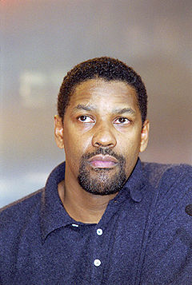

|
 Вашингтон в 2000 году |
|
| Имя при рождении | Denzel Hayes Washington, Jr. |
|---|---|
| Дата рождения | 28 декабря 1954 (66 лет) |
| Место рождения | Маунт-Вернон, Уэстчестер, Нью-Йорк, США |
| Гражданство | США |
| Профессия | актёр, кинорежиссёр, кинопродюсер |
| Карьера | 1974 — наст. время |
Вашингтон, Дензел
Де́нзел Хэйс Ва́шингтон-мл. (англ. Denzel Hayes Washington, Jr.; род. 28 декабря 1954, Маунт-Вернон) — американский актёр, кинорежиссёр и кинопродюсер. Лауреат премии «Оскар» за лучшую мужскую роль и за лучшую мужскую роль второго плана.
Дензела Вашингтона описывают как актера, который изменил «концепцию классической кинематографии», ассоциируясь с персонажами, определяемыми своим изяществом, достоинством, человечностью и внутренней силой.
Он получил семнадцать премий NAACP Image Awards, три премии «Золотой глобус», одну премию «Тони» и две премии «Оскар»: лучший актер второго плана за роль солдата армии Союза в исторической драме «Слава» (1989) и лучший актер за роль коррумпированного детектива Алонзо Харриса в криминальном триллере «Тренировочный день» (2001).
В 2020 году газета The New York Times назвала его величайшим актером XXI века.
В 2002 году Вашингтон дебютировал в качестве режиссера с биографическим фильмом «История Антуана Фишера». Его второй режиссерской работой был фильм «Большие спорщики» (2007). Его третий фильм «Ограды» (2016), в котором он также снялся, был номинирован на премию Оскар за лучший фильм.
Биография
Дензел Хейс Вашингтон-младший родился 28 декабря 1954 года в городе Маунт-Вернон, штат Нью-Йорк, США. Мальчика назвали в честь отца-священника. Дензел был средним из троих детей в семье, его мать Леннис «Линн» (урожденная Лоу, род. в 1924 году) была родом из Джорджии. Она работала в салоне красоты, и в юности он, будучи там подмастерьем, помогал матери. Его отец, Дензел Хейс Вашингтон старший (1909–1991), был уроженцем округа Бакингхем, штат Виргиния, рукоположенным священником (Пятидесятники) и сотрудником Департамента водоснабжения города Нью-Йорка, который также работал в местном универмаге S. Klein.
После школы поступил в Фордхемский университет в Нью-Йорке, где сначала изучал медицину, потом биологию, затем увлёкся журналистикой и, наконец, заинтересовался театром, окончил в 1977 году со степенью бакалавра журналистики. Затем Вашингтон поступил в Американскую консерваторию в Сан-Франциско. Через год он переехал в Нью-Йорк, начал сниматься в телевизионных фильмах и прекратил обучение в консерватории.
Карьера
В 1977 году Вашингтон получил небольшую роль в своём первом фильме — спортивной драме «Вильма». На съёмках этого фильма он познакомился со своей будущей женой Паулеттой Пирсон. В 1981 году Вашингтон снялся в комедии «Точная копия», где сыграл одну из главных ролей. Известность среди американских зрителей получил благодаря роли в телесериале NBC «Сент-Элсвер», где снимался на протяжении 6 лет.
В 1988 году он номинировался на премию «Оскар» за роль второго плана в фильме «Клич свободы» Ричарда Аттенборо.
В 1990 году актёр получил первый «Оскар» за исполнение роли второго плана в фильме о гражданской войне «Слава» Эдварда Цвика.
В 1993 году Вашингтона вновь номинировали на «Оскар» за роль религиозного деятеля в картине Спайка Ли
«Малколм Икс».
Кинокритик Роджер Эберт и режиссёр
Мартин Скорсезе назвали этот фильм одним из лучших фильмов 1990-х годов.
Вашингтон
также играл в других фильмах Ли — «Блюз о лучшей жизни», «Его игра»
с Миллой Йовович и «Не пойман — не вор»
с Клайвом Оуэном
и Джоди Фостер.
В 1993 году он сыграл роль адвоката-гомофоба в фильме «Филадельфия» с Томом Хэнксом и Антонио Бандерасом.
В 2000 году Вашингтон получил премию «Золотой глобус» и приз за лучшую мужскую роль 50-го Берлинского кинофестиваля за роль боксёра в фильме-биографии «Ураган».
В 2001 году вышел фильм «Тренировочный день», в котором актёр в первый раз за свою карьеру сыграл отрицательного персонажа и получил за него «Оскар».
Фильмография
| Год | Русское название | Оригинальное название | Роль |
| 1974 | Жажда смерти | Death Wish | |
| 1977 | Вильма | Wilma | Роберт Элдридж |
| 1979 | Плоть и кровь | Flesh & Blood | Кирк |
| 1981 | Точная копия | Carbon Copy | Роджер Портер |
| 1984 | История солдата | A Soldier's Story | Pfc. Peterson |
| 1986 | Власть | Power | Арнольд Биллинг |
| 1987 | Клич свободы | Cry Freedom | Стивин Бико |
| 1988 | За королеву и страну | For Queen And Country | Рубен Джеймс |
| 1989 | Слава | Glory | Pvt. Trip |
| 1989 | Могучий Куинн | The Mighty Quinn | Хавьер Куинн |
| 1990 | Блюз о лучшей жизни | Mo' Better Blues | Блик Джильям |
| 1990 | Состояние сердца | Heart Condition | Napoleon Stone |
| 1991 | Миссисипская масала | Mississippi Masala | Деметриус |
| 1991 | Рикошет | Ricochet | Ник Стайлз |
| 1992 | Малкольм Икс | Malcolm X | Малколм Икс |
| 1993 | Филадельфия | Philadelphia | Джо Миллер |
| 1993 | Дело о пеликанах | The Pelican Brief | Gray Grantham |
| 1993 | Много шума из ничего | Much Ado About Nothing | Дон Педро Арагонский |
| 1995 | Багровый прилив | Crimson Tide | Lt. Commander Ron Hunte |
| 1995 | Дьявол в голубом платье | Devil In Blue Dress | Изи Роулинс |
| 1996 | Жена священника | The Preacher's Wife | Дадли |
| 1998 | Падший | Fallen | Джон Хоббс |
| 1998 | Его игра | He Got Game | Джейк Шаттлсворт |
| 1998 | Осада | The Siege | Энтони «Хаб» Хаббарт |
| 1999 | Ураган | The Hurricane | Рубин Картер |
| 1999 | Власть страха | The Bone Collector | Линкольн Райм |
| 2000 | Вспоминая Титанов | Remember the Titans | Тренер Герман Бун |
| 2001 | Тренировочный день | Training Day | Алонзо Харрис |
| 2002 | Джон Кью | John Q | Джон Квинси Арчибальд |
| 2002 | История Антуана Фишера | Antwone Fisher | Dr. Jerome Davenport |
| 2003 | Вне времени | Out of Time | Мэтт Ли Уитлок |
| 2004 | Гнев | Man on Fire | Джон Кризи |
| 2004 | Маньчжурский кандидат | The Manchurian Candidate | Беннетт Марко |
| 2006 | Дежа вю | Déjà Vu | Даг Карлин |
| 2006 | Не пойман — не вор | Inside Man | Кит Фрейзер |
| 2007 | Большие спорщики | The Great Debaters | Мэлвин Толсон |
| 2007 | Гангстер | American Gangster | Фрэнк Лукас |
| 2009 | Опасные пассажиры поезда 123 | The Taking of Pelham 1 2 3 | Олтер Гарбер |
| 2010 | Книга Илая | The Book of Eli | Илай |
| 2010 | Неуправляемый | Unstoppable | Фрэнк Барнс |
| 2012 | Код доступа «Кейптаун» | Safe House | Тобин Фрост |
| 2012 | Экипаж | Flight | Уип Вайтекер |
| 2013 | Два ствола | 2 Guns | Бобби |
| 2014 | Великий уравнитель | The Equalizer | Роберт Макколл |
| 2016 | Великолепная семёрка | The Magnificent Seven | Сэм Чизем |
| 2016 | Ограды | Fences | Трой |
| 2017 | Роман Израэл, Esq. | Roman J. Israel, Esq. | Роман Израэл |
| 2018 | Великий уравнитель 2 | The Equalizer 2 | Роберт Макколл |
| 2021 | Дьявол в деталях | The Little Things | Джо «Дик» Дикон |
| 2021 | Макбет | The Tragedy of Macbeth | Король Макбет |
Режиссёрские работы
- 2002 — «История Антуана Фишера»
- 2007 — «Большие спорщики»
- 2016 — «Ограды»
Продюсерские работы
- 1995 — «Хэнк Аарон: Догоняя мечту» (исполнительный продюсер)
- 2000 — «Жизнь и работа Гордона Паркса»
- 2002 — «История Антуана Фишера»
- 2009 — «Книга Илая»
- 2012 — «Код доступа „Кейптаун“»
- 2016 — «Ограды»
Личная жизнь
С 1982 года Дензел Вашингтон женат на Паулетте Пирсон. У них четверо детей: сын Джон Дэвид (род. в 1984 году, игрок в американский футбол, ныне — актёр кино и телевидения), дочь Катя (род. в 1988 году) и двойняшки Малком и Оливия (род. в 1991 году).
Вашингтон является набожным христианином, читает каждый день Библию, является прихожанином Церкви Бога во Христе. Рассматривал возможность стать проповедником. Он заявил в 1999 году: «Часть меня всё ещё говорит: „Может быть, Дензел, ты должен проповедовать“. У меня была возможность играть великих людей, а через их слова — проповедовать». В 1995 году он пожертвовал $ 2,5 млн на строительство Церкви Бога во Христе в Лос-Анджелесе. В интервью журналу GQ актёр рассказал о своём приходе к Христу и призвал читателей журнала «начинать свой день с молитвы».
В 2008 и 2012 году на президентских выборах в США поддержал Барака Обаму.
В 2008 году Вашингтон посетил Израиль с делегацией афроамериканских художников в честь 60-летия еврейского государства.